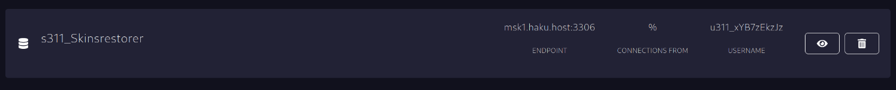

Что такое Pterodactyl
Pterodactyl - это панель управления, которая используется у нас во всех тарифах, кроме хостинга веб сайтов (не сервисов).
Приобрести сервер
Процесс приобретения сервера подробно описан в статье Начало использования
Главная страница
На главной странице доступен список серверов
Управление сервером
После перехода на страницу сервера вам будут доступны следующие разделы.
Консоль
Раздел с отображением состояния сервера.
Здесь отображается нагрузка процессора, заполненность ОЗУ и ПЗУ, использование трафика.
Слева от таблицы состояния сервера располагается поле, в котором отображаются логи сервера и присутствует возможность вводить команды.
Файлы
Доступ к файлам можно получить через сайт или SFTP.
Через сайт
В панели присутствует раздел “Файлы”. Там можно загружать файлы до 100 мб, удалять, переименовывать и перемещать файлы. Есть возможность скачать файл без ограничения по размерам.
Через sftp
Полный доступ к файловой системе вашего сервера, может осуществляться при помощи различных sftp клиентов. Автор статьи рекомендует использовать клиенты WinSCP и FileZilla. Данные для подключения (имя пользователя и ip) можно найти в разделе “Настройки”, паролем будет являться пароль от вашего аккаунта. ( его можно изменить в настройках профиля https://my.haku.host/account )
Базы данных

Задачи
Задачи это инструмент, позволяющий выполнять автоматические действия
Создаем задачу
Необходимо указать в формате cron когда выполнять задачу.
Есть возможность показать шпаргалку, с примерами расписания cron и описанием специальных символов.
Так выглядит созданная задача
Меню управления задачей
На фотоснимках вы можете наблюдать кривой перевод, который был исправлен или будет исправлен в ближайшее время. В задаче есть ЗАДАЧИ. Задачи в задачах это отдельные действия: перезагрузить сервер, включить, выключить, выполнить команду, создать бекап.
Меню создания задачи
Добавляем команду на сервер Minecraft, чтобы оповестить игроков перед рестартом
Добавляем команду для перезапуска сервера через 10 секунд после оповещения.
Добавили 2 действия. Давайте проверим. Нажимаю “Запустить сейчас”.
Как и планировалось - сервер начал сначала оповестил игроков, потом перезагрузился.
:) üéâ
Можно удалить отдельное действие.
Также можно удалить и всю задачу целиком.
Пользователи
Вы можете добавить пользователя с дополнительным доступом к вашему серверу. Нажмите “Добавить пользователя” для перехода в меню добавления пользователя.
Здесь необходимо ввести email пользователя и выбрать какие разрешения вы хотите ему предоставить.
Пользователь добавлен!
После добавления вы можете изменить разрешения пользователю или удалить его.
Бекапы
не люблю англицизмы
Создаем резервную копию.

Меню создание резервной копии.
Здесь можно указать название, файлы и папки, которые не включать в резервную копию.
На скриншоте я заблокировал резервную копию, для примера добавил папку logs в исключение резервного копирования.
Созданная резервная копия не расходует ПЗУ основного сервера.
Сеть
Запуск
Настройки
Аккаунт
В этом разделе будут описаны функции аккаунта
Аккаунт
В этом разделе можно обновить пароль, почту и настроить двухфакторную аутентификацию в панели.
Смена пароля
Смена почты
2fa
2fa не спасает от утёкшей сессии. Будьте внимательны и осторожны, не позволяйте злодеям завладеть вашими куками.

Чтобы настроить 2fa - проследуйте инструкциям на экране.
История действий
Этот раздел показывает действия с вашим аккаунтом